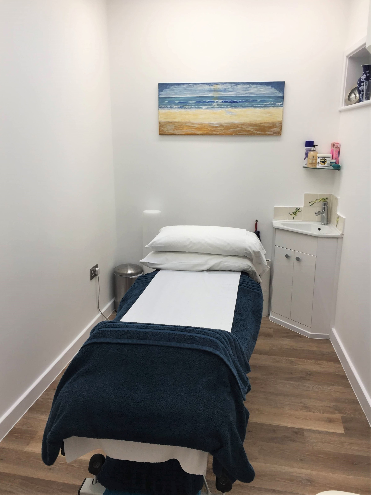

Physiotherapy & Acupuncture
Jenny Chamberlain is our experienced and specialist physiotherapist who can give you expert diagnosis, treatment and management of your musculoskeletal or arthritic condition.
Having worked in NHS hospitals, GP practices and private practice, Jenny employs the latest evidence-based treatments. This ensures you get the best scientifically proven approach for your problem
Jenny’s further experience in mental health settings allows her to approach all clients with a professional and calm manner, working closely with them to achieve the goals they choose. You get the time you need to discuss the matters that are important to you about your problem.
With Jenny you get:
- Convenient appointments at the clinic or your own home
- An explanation for your problems and guidance on how to improve or resolve them
- Treatment when you need it, fast
- Support in the ongoing management of your health independently
- Rapid referral to medical specialists should that be needed
Jenny has a special interest in:
- Rheumatology conditions including Rheumatoid Arthritis, Osteoarthritis, Ankylosing Spondylitis, Psoriatic Arthritis and Hypermobility
- Musculoskeletal conditions including low back pain, sciatica, neck pain and headaches, joint pain at one joint or affecting many joints and injuries to muscles, tendons and ligaments.
- Chronic persistent pain conditions
- Rehabilitation after surgery or injury
- Mental health conditions presenting with pain, reduced mobility and limited physical function
Treatments Used Include:
- Mobilisation: Repeated movement of joints or soft tissues, to restore the normal joint motions that occur when we move. These are used to alleviate pain and treat stiffness and tightness when you can’t do this yourself.
- Manipulation: A small single thrust movement at the end range of a joints current movement, to treat stiffness and pain. It tends to be used in combination with other treatments to holistically manage your health needs.
- Manual Therapy: This involves the use of ‘hands on’ therapeutic soft tissue techniques to target soft tissue pain, tension/sensitivity, tightness, weakness and imbalance. These techniques are very useful at treating muscular pain and tension and soft tissue tightness, which in turn relieves pain and helps to restore movement.
- Acupuncture: This is a method of reducing or resolving pain, and is used for the treatment of injury or ill health. Fine, sterile needles are inserted into specific points to produce a therapeutic effect. It has been used in China for over 3000 years, and is used in Western medicine using a science-based approach.
- General rehabilitation: This involves analysis of your functional limitations, which may include difficulty with general mobility (e.g. walking, standing or climbing stairs) and tailoring treatment specifically to address your needs.
- Exercise Therapy: Used to directly target your problem, specific and general exercise may be suggested to help flexibility of soft tissues and joints, improve your balance and control and strengthen you.
